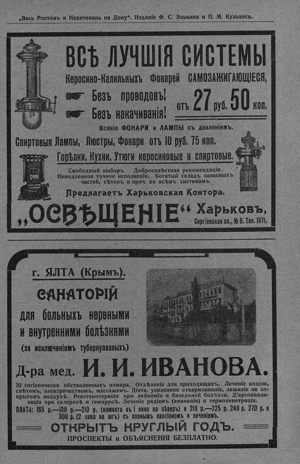

Лист источника 319
Скан

Распознанный текст
„Весь Ростовъ и Нахичевань на Дону“. Изданіе Ф. С. Элькина и П. М. Кулькеса.
ВСѢ ЛУЧШІЯ СИСТЕМЫ
Керосино-Калильныхъ фонарей САМОЗАЖИГАЮЩІЕСЯ,
Безъ проводовъ!
Безъ накачиванія!
отъ 27 руб. 50 коп.
Всякіе ФОНАРИ и ЛАМПЫ съ давленіемъ.
Спиртовыя Лампы, Люстры, Фонари отъ 10 руб. 75 коп.
Горѣлки, Кухни, Утюги керосиновые и спиртовые.
Свободный выборъ. Добросовѣстная рекомендація.
Немедленное точное исполненіе. Богатый складъ запасныхъ
частей, сѣтокъ и проч. ко всѣмъ системамъ.
Предлагаетъ Харьковская Контора.
„ОСВѢЩЕНІЕ“ Харьковъ,
Сергіевская пл., № 8. Тел. 1871.
г. ЯЛТА (Крымъ).
САНАТОРІЙ
для больныхъ нервными
и внутренними болѣзнями
(за исключеніемъ туберкулезныхъ)
Д-ра мед. И. И. ИВАНОВА.
32 гигіенически обставленныхъ номера. Отдѣленіе для приходящихъ. Леченіе водою,
свѣтомъ, электричествомъ, массажемъ. Діэта, усиленное откармливаніе, лежаніе на от-
крытомъ воздухѣ. Рентгенотерапія при лейкиміи и базедовой болѣзни. Д’арсонвали-
зація при склерозѣ и геморроѣ. Леченіе радіемъ (эманація) и термопенетрація.
ПЛАТА: 165 р.—180 р.—210 р. (комната въ 1 окно на сѣверъ) и 210 р.—225 р. 240 р. 270 р. и
300 р. (2 окна на югъ) съ полнымъ пансіономъ и леченіемъ.
ОТКРЫТЪ КРУГЛЫЙ ГОДЪ.
ПРОСПЕКТЫ И ОБЪЯСНЕНІЯ БЕЗПЛАТНО.